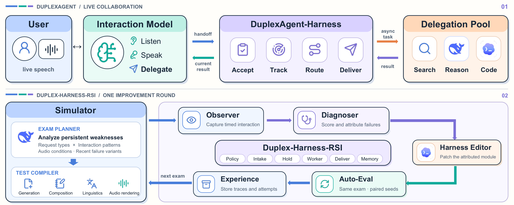
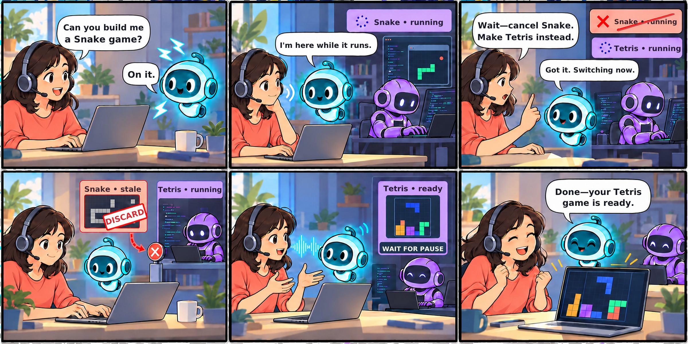
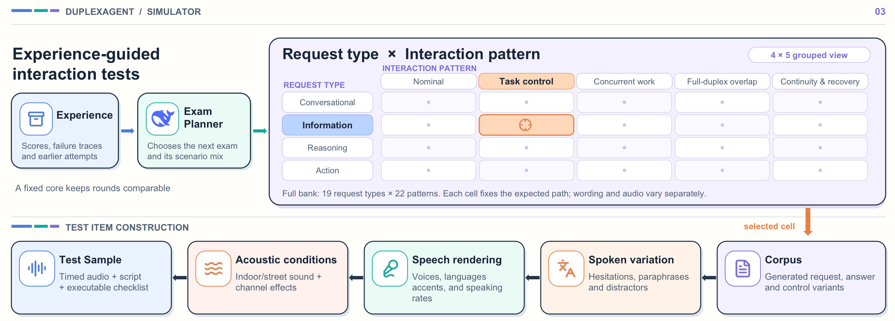
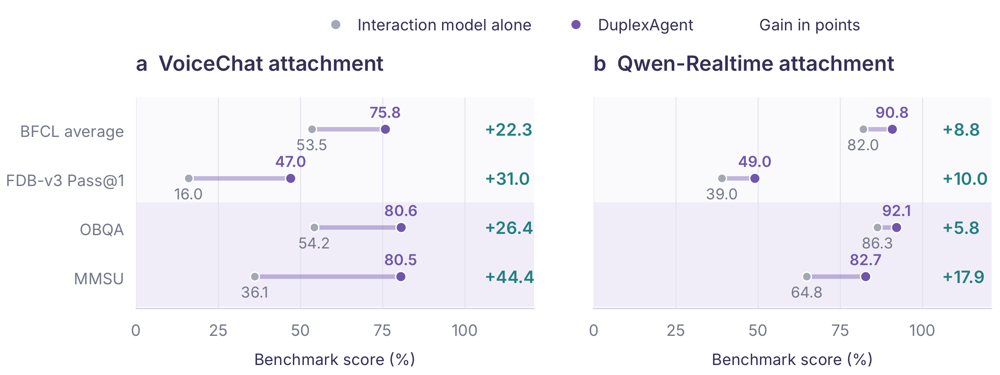
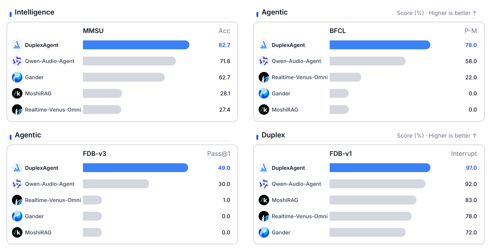
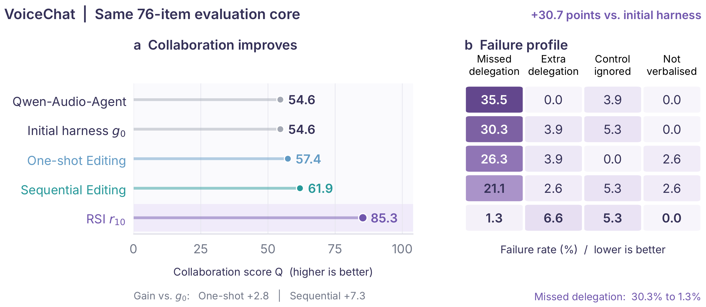
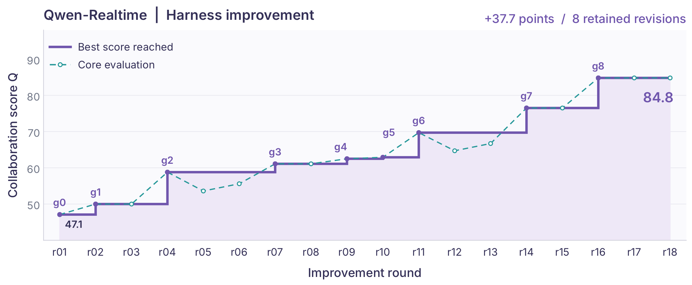

Accept
Snake starts
Policy delegates the implementation. Hold acknowledges it. Worker sends the goal and context to a coding agent.
Full-duplex voice collaboration
Recursive harness improvement for full-duplex voice agent collaboration
The interaction model stays on the live channel. Search, reasoning, and coding run in a delegation pool. A six-module harness decides what is delegated, which task is current, and when a result may be spoken. Duplex-Harness-RSI revises those modules from timed conversations whose failures name the module to repair.
* The Chinese University of Hong Kong, Shenzhen † Amphion Technology
Qwen-Realtime attachment. VoiceChat shows larger gains on the same tasks, including +44.4 MMSU. Full tables are in the tech report.
01 Overview
A deployed system is an interaction model, a delegation pool, and a collaboration harness. Duplex-Harness-RSI changes only the harness. The same reasoning and coding roles that serve the user also plan the next exam and propose the next repair.

02 A live session
A useful result is one that still answers the current request and can be spoken without talking over the user. The session below is the running example in the report: Snake is cancelled, Tetris replaces it, and the late Snake result is discarded.

Policy delegates the implementation. Hold acknowledges it. Worker sends the goal and context to a coding agent.
The user cancels Snake mid-run. Intake marks Snake obsolete. A late Snake result is recorded and cannot become current again.
When Tetris is ready, Deliver waits until the user is not speaking, then returns that result through the interaction model.
03 Harness
The split is what makes a failure local. Policy and Intake decide what the user means. Hold and Deliver protect the conversational rhythm. Worker hands work to a delegate. Memory keeps context on both timelines.
Instructions, the delegation schema, and routing examples.
Parsing, control cues, task relations, and resolution rules.
Receipts, progress timing, and replies to control turns.
Routing, task instructions, result schemas, and skills.
The speaking window, waiting, and success or failure rendering.
Turn assembly, retention, compaction, and recovery after reset.
04 Simulator
A request type fixes the capability and the allowed route. An interaction pattern fixes what happens while that request is in flight: refinement, cancellation, overlap, delay. Wording and audio change only after the expected behaviour is fixed, so a failure still points at a module.

05 Results
A background model can write a better spoken answer and still lose the benchmark function call, if the harness replaces that call with a title or a sentence. DuplexAgent keeps the routing decision separate from the content of the handoff. Direct questions stay on the interaction model. Tool requests leave as executable calls, with the arguments Memory kept from the user turn.


06 Duplex-Harness-RSI
On a fixed 76-item VoiceChat core, the initial harness and Qwen-Audio-Agent both score 54.6. Giving every exam from the campaign to one edit reaches 57.4. Replaying those exams for ten revisions, without per-round attribution or repair history, reaches 61.9. Ten rounds of Duplex-Harness-RSI reach 85.3. Missed delegation falls from 30.3% of core items to 1.3%. Extra delegation rises from 3.9% to 6.6%, and ignored control stays at 5.3%.
With Qwen-Realtime the fixed-core score moves from 47.1 at the initial harness to 84.8 after eight retained revisions, a gain of 37.7 points. A candidate replaces the incumbent only when it wins more paired cases than it loses and preserves the collaboration invariants. Rejected rounds keep the current harness, which is why the retained score is a staircase.


Relative reductions are on the local exam used to test each repair. They explain the mechanism. The core scores above are the summary.
| Module | Repair | Local evidence |
|---|---|---|
| Policy | Direct-answer categories stay explicit, so familiar conversation is not routed too broadly. | Extra calls reduced by 50%. |
| Intake | Cancellation and replacement resolve against live task state, including replacement preambles. | Ignored cancels reduced by 81%. |
| Hold | Progress is reported earlier, in a short receipt the adapter can speak. | Missing progress reduced by 75%. |
| Worker | Requested units and verified result content are preserved. Calculation is used when the request needs it. | Wrong answers reduced by 66.7%. |
| Deliver | Speech waits for user silence. An unsuccessful run is not rendered as a successful answer. | Overlaps and concealed failures reduced by 100% on the local exams. |
| Memory | Complete user turns and the relevant context travel with the delegated request. | Missing-context failures reduced by 60%. |
Citation
Citation details will be updated if the report is released as a preprint.
@misc{shen2026duplexagent,
title = {DuplexAgent: Recursive Harness Improvement for Full-Duplex Voice Agent Collaboration},
author = {Shen, Yingda and Wang, Yuxiang and Feng, Kunyu and Ni, Qinke and Li, Jiaqi and Hsu, Minghao and Zhang, Junan and Chen, Dekun and Bian, Yutong and Wu, Zhizheng},
year = {2026},
note = {Technical report}
}